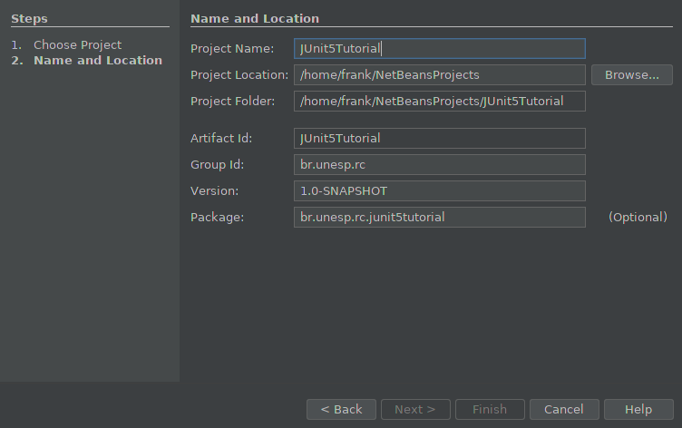
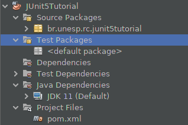
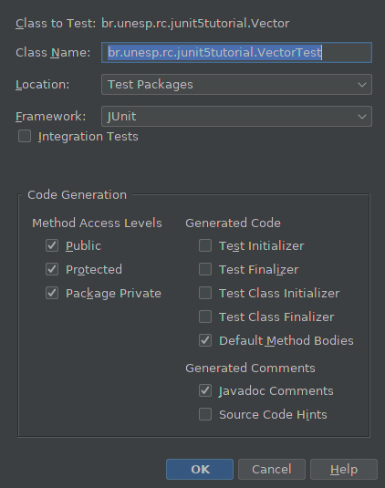
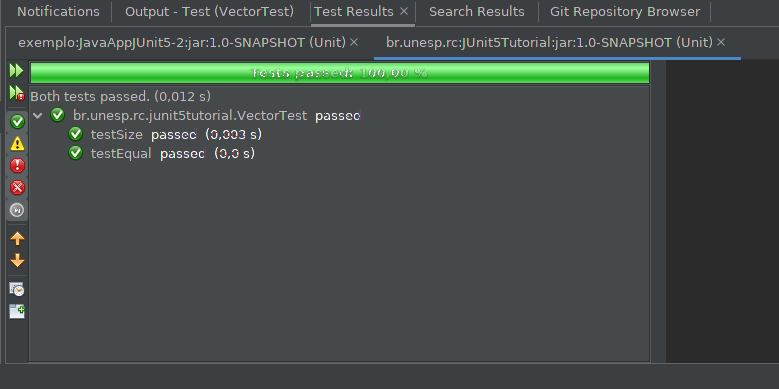

Desenvolvendo testes unitários com o framework JUnit 5
GRUPO: 0
- Frank José Affonso
- José Affonso
- José Frank
Pré-requisitos
Objetivo
O objetivo principal deste tutorial é apresentar aos alunos do BCC Unesp (Integral e Noturno) como o framework JUnit 5 pode ser utilizado na elaboração de testes unitários. Esse tutorial visa também mostra como a IDE Netbeans 11.3 pode facilitar essa atividade.
Como objetivo secundário, e não menos importante, este tutorial visa auxiliar os alunos de ambas as turmas na elaboração desse tipo de documento.
O que é o JUnit 5?
O JUnit 5 é composto por módulos de três subprojetos diferentes.
JUnit 5 = Plataforma JUnit + JUnit Jupiter + JUnit Vintage
A Plataforma JUnit serve como base para o lançamento de estruturas de teste na JVM, além de definir a API TestEngine para desenvolver uma estrutura de teste executada na plataforma. Além disso, a plataforma fornece um Console Launcher para iniciar a plataforma a partir da linha de comando e um Runner baseado no JUnit 4 para executar qualquer TestEngine na plataforma em um ambiente baseado no JUnit 4.
JUnit Jupiter é a combinação do novo modelo de programação e modelo de extensão para escrever testes e extensões no JUnit 5. O subprojeto Jupiter fornece um TestEngine para executar testes baseados na plataforma Jupiter.
O JUnit Vintage fornece um TestEngine para executar testes baseados no JUnit 3 e JUnit 4 na plataforma.
Criando o projeto
Vamos trabalhar neste tutorial com projeto Maven. Para isso, vá ao meu "File" -> "New Project".
Na janela que se abre, selecione a categoria "Maven" e, em seguida, "Java Application"
Preencha os campos conforme a figura abaixo e clique no botão "Finish".

Observe a estrutura do projeto criado na IDE:
 Observe agora o conteúdo do arquivo pom.xml do projeto
Vamos adicionar a dependência ao projeto. Essa operação pode ser realizada de duas maneiras:
1 - Pela IDE, clicando com o botão direito sobre a pasta Dependencies; ou
2 - Pelo site Maven repository.
Os passos dessas operações não serão apresentados neste tutorial. Abaixo segue o
pom.xml do projeto com as dependências:
Criando o exemplo
Vamos agora criar nosso exemplo...
Vamos criar uma classe Vector.java no pacote br.unesp.rc.junit5tutorial e implementar dois métodos. O primeiro recebe como parâmetro dois vetores do tipo int e retorno se estes são iguais. Já o segundo método recebe dois números inteiros (que representa o tamanho dos vetores) e retorna se os mesmos são iguais. Veja o código fonte desse implementação abaixo:
O próximo passo agora é criar os casos de testes para verificar se o código desenvolvido realmente funciona.
Para isso, vamos aproveitar um recurso interessante da IDE, que é a geração automática dos testes...
Clique no nome da classe e navegue pelas opções: Navigate -> Go to test/Tested class ou pelo atalho Ctrl+Alt+T.
Na tela que se abre deixe marcada as seguintes opções:
 Observe o conteúdo da classe VectorTest.java
Agora vamos modificar esses métodos para verificar se o código implementado na
classe Vector.java realmente funciona.
Primeiro vamos alterar o método testEqual() como mostrado abaixo:
IMPORTANTE: Veja que no trecho acima dois vetores IGUAIS foram criados.
Depois vamos alterar o método testSize() como mostrado abaixo:
IMPORTANTE: Veja que no trecho acima que dois vetores DIFERENTES foram criados.
Rodando os testes
Para executar os testes clique sobre a classe VectorTest.java com o
botão direito e, em seguida, clique em Test File. Abaixo é apresentada a tela
de execução dos testes:
Observe que os dois testes foram bem sucedidos. No primeiro foram inseridos dois vetores iguais
e o resultado esperado para esse teste foi definido como true. Já no segundo, o resultado esperado
foi definido como false para dois vetores de tamanho diferente.
Sobre o exemplo apresentado, vale destacar que mais casos de testes devem ser elaborados para comprovar que a implementação está correta. Aqui foi demonstrado apenas um caso de teste!
Cuidado para não gerar apenas o caso de teste que funcione!!! O objetivo desse tutorial foi apresentar o funcionamento do JUnit 5 em uma IDE de desenvolvimento (Netbeans 11.3)
Para finalizar este tutorial, dois outros recursos serão comentados: ordem de execução dos testes e habilitação de testes.
A ordem dos testes é definida pela anotação @Order(X), onde X é o número que presenta a ordem dos testes. Além disso,
é necessário anotar a classe de teste com @TestMethodOrder(MethodOrderer.OrderAnnotation.class). Veja o código completo de
nossa classe de teste.
Veja o resultado da ordem de execução:

Para desabilitar a execução de um teste, a anotação @Disabled deve ser
inserida no método desejado. Como essa operação é muito simples, a mesma não será apresentada
neste tutorial. Fica por conta dos interessados!!!
Bem, é isso! Até a próxima!